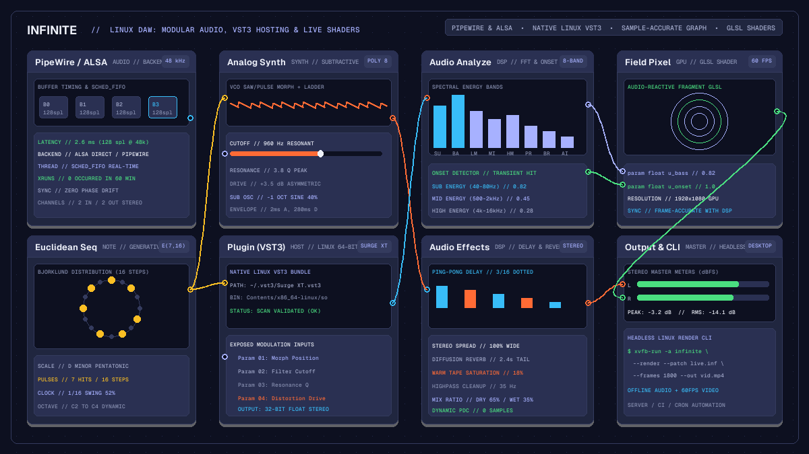

Creative
Linux DAW workflows: modular audio, VST3 hosting and live visuals
Explore modular music production on Linux with Infinite: a Linux DAW to route synthesiser graphs, host Linux VST3 plugins, and patch audio into live visuals.

on this page
- Architecture of a Linux DAW on an open canvas
- Low-latency audio with PipeWire and ALSA
- Native Linux VST3 plugin hosting and modulation
- Generative sequencing with note graphs
- Cabling audio directly into GPU shaders and 3D scenes
- Headless audio rendering and automation on Linux
- Hardware limits and platform considerations

Selecting a Linux DAW has historically required choosing between two compromises: rigid timeline workstations ported from commercial platforms, or specialised open-source modular environments that excel at algorithmic sound but lack unified visual workflows. Traditional workstations organise music production around horizontal tracks, channel strips, and aux sends. While this paradigm serves multi-track recording well, it creates unnecessary friction for electronic musicians, generative composers, and creative coders who treat audio routing, parameter modulation, and visual synthesis as interconnected elements of a single performance.
In Infinite, modular audio routing, synthesiser sound design, Linux VST3 hosting, and live GPU graphics share one node graph. Instead of segregating audio processing to one application and routing control data or textures over inter-process bridges, every signal flows across typed patch cables on an open canvas. This guide examines how to construct a complete production setup within a modern Linux DAW, covering audio server integration, low-latency device scheduling, native plugin hosting, generative MIDI note pipelines, and audio-reactive visual synthesis.
Architecture of a Linux DAW on an open canvas
Conventional workstations evaluate signal flow through a fixed hierarchy: audio clips sit on tracks, tracks process insert effects, and buses sum channels into master outputs. In contrast, Infinite models entire musical compositions and visual presentations as a directed acyclic graph.
Signal flow occurs through typed connection pins:
- Audio pins: Transmit multi-channel 32-bit floating-point audio buffers evaluated at the hardware sample rate (such as 48 kHz or 96 kHz).
- Note pins: Carry polyphonic note events, gate states, velocity values, and microtonal pitch offsets.
- Modulation pins: Provide floating-point control values, envelope contours, and low-frequency oscillations updated per audio block.
- Visual pins: Stream GPU texture references, 3D geometry meshes, camera matrices, and shader parameters.
At the beginning of each audio block, Infinite sorts the graph topologically to determine execution order. Nodes without audio dependencies compute first, passing output buffers forward to downstream processors. This explicit data flow eliminates invisible bus latency and enables parallel processing across multi-core processors. You can examine this topology in depth in our node-based DAW guide.
Low-latency audio with PipeWire and ALSA
Reliable audio performance on Linux depends on clear interaction with audio subsystems. Infinite provides native backend support designed for modern Linux audio environments:
- ALSA direct hardware access: For dedicated audio interfaces in studio environments, Infinite can interface directly with ALSA. Bypassing intermediate system daemons yields predictable buffer timing and allows running low buffer sizes, such as 64 or 128 samples at 48 kHz, without dropouts.
- PipeWire integration: On modern Linux distributions where PipeWire manages system-wide audio routing, Infinite connects seamlessly through PipeWire ALSA and PulseAudio compatibility layers. Audio streams route alongside other system applications while maintaining stable clock synchronisation.
The audio engine runs its DSP computation inside a dedicated real-time audio thread. When system security configurations permit (such as through standard audio group limits in /etc/security/limits.d/audio.conf), the audio thread requests real-time scheduling priority (SCHED_FIFO). This isolates audio buffer generation from GUI rendering, file indexing, and background tasks, preventing audible xruns during intensive live sets.
Native Linux VST3 plugin hosting and modulation
The availability of high-quality software instruments on Linux has grown significantly. Open-source synthesiser projects such as Surge XT and Odin 2, alongside professional commercial plugins from developers like u-he and Vital, provide native Linux binaries.
Infinite features a native 64-bit VST3 hosting container via the Plugin node. On Linux, the host scans standard module locations:
~/.vst3/
/usr/lib/vst3/
/usr/local/lib/vst3/Plugins distributed in standard Linux VST3 bundle format:
PluginName.vst3/Contents/x86_64-linux/PluginName.soWhen you drop a Plugin node onto the canvas and load a synthesiser or effect, Infinite queries the plugin descriptor and exposes its parameters. Unlike traditional digital audio workstations where parameter automation requires drawing curves into hidden automation lanes, the Plugin node makes automation parameters available as modulatable input pins directly on the node face.
You can connect native canvas modulators, such as the LFO, Envelope Follower, or Random Note Generator, straight into filter cutoff, resonance, or delay time pins. If you wish to learn more about native sound generators, read our synthesiser sound design guide.
Generative sequencing with note graphs
Because note generation in Infinite is modular, you are not restricted to static piano roll loops. You can assemble complex generative sequencers using dedicated note processing nodes:
Euclidean Sequencer: Generates polyrhythmic triggers based on the Euclidean rhythm algorithm. By varying step lengths (such as 16 steps with 7 distributed pulses), you create organic rhythmic counterpoints.Random Note Generator: Emits algorithmic pitch sequences with controlled randomness, drift probability, and octave constraints.Quantizer: Snaps continuous or arbitrary note pitches to musical scales (such as Minor Pentatonic, Dorian, or Hirajoshi).Note Sequencer: Provides classic step sequencing with velocity, gate duration, and pitch controls per step.
These note streams connect directly into internal synthesiser nodes. For example, route a polyrhythmic sequence into Analog for warm subtractive basslines, send a second stream into FM for crystalline bell tones, and trigger custom rhythmic percussion kits using Drum Sequencer. Because note cables carry discrete event packets, branching one sequencer into three separate instruments takes a single mouse drag.
Cabling audio directly into GPU shaders and 3D scenes
In conventional live performance workflows, synchronising visuals with sound requires running two separate programs and transmitting audio levels via OSC, MIDI, or virtual audio loops. This introduces latency, buffer jitter, and configuration complexity.
Infinite unifies audio DSP and graphics rendering within the same application process:
Audio Analyze: Computes an 8-band FFT spectrum and transient onset detectors directly from any audio node output cable. It provides immediate float values for sub-bass, low, mid, and high frequency energies.Field Pixel: Implements custom GLSL fragment shaders evaluated directly on the GPU. You can declare uniforms with theparamkeyword and cableAudio Analyzefrequency outputs directly into shader parameters.Render 3D: Renders real-time 3D geometry meshes, point clouds, and procedural materials. Audio modulation can deform vertex displacements, drive camera orbit speeds, or modulate lighting colours.
Because audio analysis and shader rendering share the same memory space, visual reactions occur on the exact frame the audio transient occurs. For practical shader examples, explore our audio-reactive GLSL shader guide.
Headless audio rendering and automation on Linux
A key advantage of Linux in audio production is automation and scriptability. Infinite provides a comprehensive headless command-line interface that allows musicians and developers to render, validate, and inspect patches without launching a desktop window.
To validate an audio patch from a terminal:
infinite --validate --patch my_song.infTo render an audio and video export on a headless Linux server or continuous integration runner:
xvfb-run -a infinite --render --patch my_song.inf --frames 1800 --out output.mp4To extract an audio summary and verify peak levels:
infinite --audio-summary --patch my_song.infThis capability makes it straightforward to automate album rendering, generate audio-reactive visual videos from automated cron scripts, or build headless generative music installations.
Hardware limits and platform considerations
Maintaining clear expectations about platform capabilities ensures dependable operation:
- Headless hardware inputs: In headless batch rendering mode, live hardware audio inputs (such as system microphones) and video cameras are refused, returning exit code 4. Offline batch rendering operates on deterministic file sources and synthesiser graphs.
- Display server requirements: Running headless rendering on headless Linux systems requires a virtual framebuffer, such as
xvfb-run -a, because GPU shader passes require an active OpenGL context. - Plugin compatibility: Infinite on Linux hosts 64-bit native Linux VST3 plugins. Windows VST binaries wrapped in wine bridges are not natively managed, and proprietary formats such as AAX are not supported.
By uniting modular audio graphs, low-latency Linux audio drivers, native VST3 plugin hosting, and GPU visual synthesis, Infinite provides a coherent, open-source foundation for creative music production on Linux.